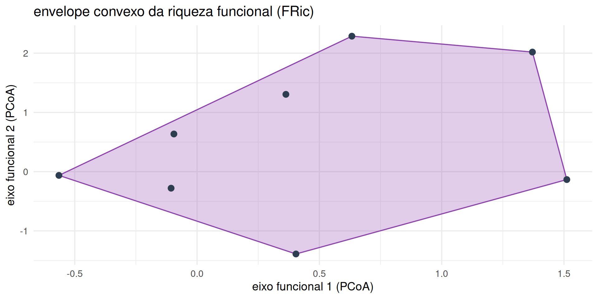

Diversidade taxonômica, funcional e filogenética
Além da equivalência de espécies
Limitação da equivalência taxonômica
- Todas as espécies como unidades ecológicas idênticas.
- Filogenia é a história evolutiva.
- A ecologia moderna integra as dimensões taxonômica, funcional e filogenética.
Traços funcionais (functional traits)
- São características morfológicas, fisiológicas ou fenológicas mensuráveis no nível do indivíduo.
- Traços de resposta (response traits): determinam como as espécies respondem aos filtros ambientais abióticos.
- Traços de efeito (effect traits): determinam como as espécies influenciam os processos do ecossistema.

Matrizes ecológicas fundamentais na análise funcional
- Matriz L (locais \(\times\) espécies)
- Matriz Q (espécies \(\times\) traços)
- Matriz R (locais \(\times\) variáveis ambientais)

13. regras de montagem: o papel dos filtros abióticos
- filtros abióticos severos (seca, geada, solo ácido) atuam selecionando traços adaptativos específicos.
- forçam a convergência funcional (trait underdispersion).
- sob conservadorismo de nicho, geram agrupamento filogenético (\(\text{NRI} > +1,96\)).
- espécies da comunidade local são mais aparentadas entre si do que o esperado ao acaso.

14. regras de montagem: o papel dos filtros bióticos
- a competição interespecífica severa impede a coexistência de espécies funcionalmente idênticas (limitação de similaridade).
- força a divergência funcional (trait overdispersion).
- sob conservadorismo de nicho, gera superdispersão filogenética (\(\text{NRI} < -1,96\)).
- espécies coexistentes são menos aparentadas entre si do que o esperado ao acaso.

19. interpretação integrada das três dimensões
- diversidade taxonômica (\(S, H'\)): quantifica o número e equitabilidade dos nomes/táxons.
- diversidade funcional (CWM, FRic, Rao Q): quantifica o espaço de nichos e papéis ecossistêmicos.
- diversidade filogenética (PD, NRI): quantifica a linhagem evolutiva e o patrimônio genético acumulado.
- a sobreposição das três dimensões revela os mecanismos causais da montagem de comunidades.